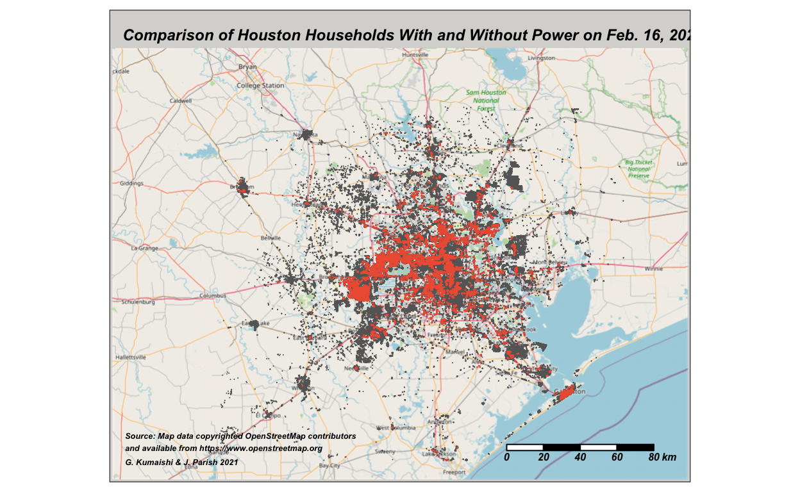

Winter Storm Uri and the Texas Freeze
On February 13th, a major winter storm developed off the Pacific Northwest coast of the U.S. The storm, known as Winter Strom Uri, affected the continental U.S., Canada, and Northern Mexico. Winter Storm Uri caused widespread power outages, damage to residential water systems, and hundreds of fatalities in Texas alone (KUT 2021). The storm, which lasted from February 13 to February 17, produced blizzards, ice storms, tornadoes and record snow fall levels. It is the costliest winter storm in US history (NOAA 2021). It disproportionately affected Texas due to the State’s lack of adequate electrical and water supply winterization infrastructure, isolation from national power grid and a deficiency in prior experience with prolonged freezing temperatures. According to a University of Houston report, Winter Storm Uri caused more damage and loss of life in Harris County than anywhere else in North America. The report estimated that 91% of Harris County residents lost power during the storm and 65% were left without access to potable water. This assignment analyzes how many residential buildings lost power on February 16 and if residential median income would serve as a predictor for where power outages were located in Harris County.
1) Access and wrangle the lights data:
The night lights data used for this analysis comes from NASA’s Worldview website. The dates 2021-02-07 and 2021-02-16 were chosen due to image clarity and lack of cloud cover. After acquiring the data for those two days, the images were converted to raster objects and used to calculate the difference in night light intensity to approximate the area of Houston that lost power during the storm.
a. Load DNB dataset from VNP46A1 granules using provided function:
Show code
read_dnb <- function(file_name) {
# Reads the "DNB_At_Sensor_Radiance_500m" dataset from a VNP46A1 granule into a STARS object.
# Then read the sinolsoidal tile x/y positions and adjust the STARS dimensions (extent+delta)
# The name of the dataset holding the nightlight band in the granule
dataset_name <- "//HDFEOS/GRIDS/VNP_Grid_DNB/Data_Fields/DNB_At_Sensor_Radiance_500m"
# From the metadata, we pull out a string containing the horizontal and vertical tile index
h_string <- gdal_metadata(file_name)[199]
v_string <- gdal_metadata(file_name)[219]
# We parse the h/v string to pull out the integer number of h and v
tile_h <- as.integer(str_split(h_string, "=", simplify = TRUE)[[2]])
tile_v <- as.integer(str_split(v_string, "=", simplify = TRUE)[[2]])
# From the h/v tile grid position, we get the offset and the extent
west <- (10 * tile_h) - 180
north <- 90 - (10 * tile_v)
east <- west + 10
south <- north - 10
# A tile is 10 degrees and has 2400x2400 grid cells
delta <- 10 / 2400
# Reading the dataset
dnb <- read_stars(file_name, sub = dataset_name)
# Setting the CRS and applying offsets and deltas
st_crs(dnb) <- st_crs(4326)
st_dimensions(dnb)$x$delta <- delta
st_dimensions(dnb)$x$offset <- west
st_dimensions(dnb)$y$delta <- -delta
st_dimensions(dnb)$y$offset <- north
return(dnb)
}
b. Invoke the function:
Show code
# Tile 1, Feb. 7
tile1_2021038 <- "data/VNP46A1/VNP46A1.A2021038.h08v05.001.2021039064328.h5"
dnb1_2021038 <- read_dnb(file_name = tile1_2021038)
# Tile 2, Feb. 7
tile2_2021038 <- "data/VNP46A1/VNP46A1.A2021038.h08v06.001.2021039064329.h5"
dnb2_2021038 <- read_dnb(file_name = tile2_2021038)
# Tile 1, Feb. 16
tile1_2021047 <- "data/VNP46A1/VNP46A1.A2021047.h08v05.001.2021048091106.h5"
dnb1_2021047 <- read_dnb(file_name = tile1_2021047)
# Tile 2, Feb 16
tile2_2021047 <- "data/VNP46A1/VNP46A1.A2021047.h08v06.001.2021048091105.h5"
dnb2_2021047 <- read_dnb(file_name = tile2_2021047)
c. Combine tiles into single raster for each date:
Show code
# Use `st_mosaic()` to combine each pair of tiles into a single `stars` object for each date.
feb_7 <- st_mosaic(dnb1_2021038, dnb2_2021038)
feb_16 <- st_mosaic(dnb1_2021047, dnb2_2021047)
# Delete the previously 4 loaded objects from your environment using `rm()`.
rm(dnb1_2021038, dnb1_2021047, dnb2_2021038, dnb2_2021047, tile1_2021038, tile2_2021038, tile1_2021047, tile2_2021047)
d. Subtract stars objects to determine blackout locations:
Show code
# Subtract the night lights intensity after the storm from the night lights intensity before the storm to get the difference in night lights intensity caused (presumably) by the storm. Then reclassify the difference raster. Assume that any location that experienced a drop of more than 200 nW cm-2 sr-1 is a location of a blackout.
light_mask <- c(feb_7 - feb_16) > 200
light_mask[light_mask == FALSE] <- NA
e. Vectorize the blackout mask and fix invalid geometries:
Show code
blackout_mask <- st_as_sf(light_mask) %>%
st_make_valid()
f. Create ROI and crop the blackout dataset:
Show code
# Create the bounding box.
roi_poly <- st_polygon(list(rbind(
c(-96.5, 29),
c(-96.5, 30.5),
c(-94.5, 30.5),
c(-94.5, 29),
c(-96.5, 29))))
roi <- st_sfc(roi_poly, crs = "EPSG:4326") # convert to simple feature and set coordinate system to WGS84
# Crop the blackout dataset.
cropped_blackout <- blackout_mask[roi, op = st_intersects]
cropped_blackout_3083 <- st_transform(cropped_blackout,
crs = 3083) # re-project blackout dataset to NAD83
g. Visualize the Feb 16th blackout:
Show code
# plot region of blackouts in Harris County and adjacent areas
blackout_roi_map <- tm_shape(roi) +
tm_borders(lwd = 3) +
tm_shape(cropped_blackout_3083) +
tm_polygons() +
tm_shape(texas_co) +
tm_borders() +
tm_shape(harris_co) +
tm_borders(col ="#F56A31",
lwd = 3,
) +
tm_scale_bar(position = c("right", "bottom")) +
tm_layout(title = "Regions without power in and adjacent to Harris County on Feb. 16, 2021",
fontface = 2,
inner.margins=c(0,0,.075,0),
title.size=.8) +
tm_credits("Source: Map data copyrighted OpenStreetMap contributors\nand available from https://www.openstreetmap.org", # credit data source including github link; \n creates text break
position = c("left", "bottom"),
align = "left",
size = 0.5) +
tm_credits("G. Kumaishi & J. Parish 2021",
size = 0.4,
position = c("left", "bottom"))
blackout_roi_map

Map 1: Preliminary map of regions in and around Harris County, TX without power due to Winter Storm Uri on February 16, 2021. Additional analyses were completed to account for highway lights and residential buildings (see below).
2) Access and wrangle the roads data:
Light from highways contributes significantly to night lights visible in satellite images. To account for this, a buffer of 200m was created around all major highways in the Houston metropolitan area. Roads data was acquired using OpenStreetMap (OSM).
a. Load data using SQL query:
Show code
# Use `st_read()` to download the roads data.
query <- "SELECT fclass, geom
FROM gis_osm_roads_free_1
WHERE fclass in (
'motorway', 'motorway_link', 'primary', 'primary_link'
)
"
highways <- st_read("data/gis_osm_roads_free_1.gpkg", query = query)
highways_3083 <- st_transform(highways, crs = 3083) # re-project highways dataset to EPSG:3083
b. Buffer highways by 200 meters.
Show code
hwy_buffer200m <- st_buffer(highways_3083, dist = 200)
c. Dissolve buffers:
Show code
# Use st_union to dissolve buffer polygons (smooths).
hwy_buffer_dissolve_3083 <- st_union(hwy_buffer200m)
d. Create Houston basemap:
Show code
# Create base map for Houston:
point1 <- st_point(c(-96.5, 29))
point2 <- st_point(c(-96.5, 30.5))
point3 <- st_point(c(-94.5, 30.5))
point4 <- st_point(c(-94.5, 29))
coordinates <- list(rbind(point1, point2, point3, point4, point1))
polygon_template <- st_polygon(x = coordinates)
houston <- st_sfc(polygon_template, crs = "EPSG:4326")
houston_bbox <- st_bbox(houston)
houston_map <- osm.raster(houston_bbox)
e. Visualize highway buffers in Houston:
Show code
# Create map of Houston highway buffers.
highway_map <- tm_shape(houston_map) +
tm_rgb() +
tm_shape(hwy_buffer_dissolve_3083) +
tm_polygons() +
tm_scale_bar(position = c("right", "bottom")) +
tm_layout("Houston, TX Highways with 200m Buffers",
fontface = 2,
bg.color="#F5EDE1",
inner.margins=c(0,0,.075,0),
title.size=.9) +
tm_credits("G. Kumaishi & J. Parish 2021",
size = 0.4,
position = c("left", "bottom"))
highway_map

Map 2: Major highways in Houston, TX buffered to account for night light intensity during Winter Storm Uri.
3) Access and wrangle the buildings data:
Buildings data was also acquired from OSM, but relevant areas were compiled into a GeoPackage for the Houston metropolitan area alone. The dataset was loaded using a SQL query, similar to the roads data above.
a. Load data using SQL query:
Show code
buildings <- st_read(here("data", "gis_osm_buildings_a_free_1.gpkg"))
query <- "SELECT *
FROM gis_osm_buildings_a_free_1
WHERE (type IS NULL AND name IS NULL)
OR type in ('residential', 'apartments', 'house', 'static_caravan', 'detached')"
residential <- st_read("data/gis_osm_buildings_a_free_1.gpkg", query = query)
residential <- st_transform(residential, crs = 3083) # re-project to EPSG:3083
cat(sep = "\n") # add carriage returns to read out of residential data
#unique(residential$fclass)
4) Access and wrangle the census tract data:
Census tract data was obtained from the U.S. Census Bureau’s American Community Survey from 2019, and was saved as a geodatabase. Datasets were merged using dplyr’s left_join().
a. Access the census data:
b. Extract the GEOID and median income fields:
c. Merge geometry and income datasets:
Show code
# Merge median income with acs_geom dataset by GEOID columns.
income <- left_join(acs_geoms, median_income, by = c("GEOID_Data" = "GEOID"))
income <- st_transform(income, crs = 3083) # re-project dataset to NAD83
5) Merge the datasets
In order to determine the number of residential buildings that lost power during the storm, the above datasets were merged.
a. Remove the buffer from the blackout mask:
Show code
# Remove the buffer from our vectorized blackout mask using `st_difference()`.
blackout_nohwy <- st_difference(cropped_blackout_3083, hwy_buffer_dissolve_3083)
b. Find all residential buildings in blackout areas:
Show code
# Use spatial subsetting to find all the residential buildings in blackout areas.
buildings_blackout <- residential[blackout_nohwy, op = st_intersects] # Here is the residential data then mask with blackout data that intersects
c. Spatially join the data:
6) Analysis
How many residential buildings were without power on 2021-02-16?
There were 157,411 buildings without power on February 16, 2021 as a result of this event.
Show code
buildings_map <- tm_shape(houston_map) +
tm_rgb() +
tm_shape(buildings_blackout) +
tm_polygons() +
tm_scale_bar(position = c("right", "bottom")) +
tm_layout(title = "Houston Residential Buildings Without Power on Feb. 16, 2021",
fontface = 2,
bg.color="#D8D7D5",
inner.margins=c(0,0,.075,0),
title.size=.9) +
tm_credits("Source: Map data copyrighted OpenStreetMap contributors\nand available from https://www.openstreetmap.org", # credit data source including github link; \n creates text break
position = c("left", "bottom"),
align = "left",
size = 0.4) +
tm_credits("G. Kumaishi & J. Parish 2021",
size = 0.4,
position = c("left", "bottom"))
buildings_map

Map 3: Residential buildings in Houston, TX that lost power through February 16th, 2021 due to Winter Storm Uri.
Is there a socioeconomic metric that predicts being affected by the power outage?
Harris County’s power grid was not as significantly impacted by the “Texas Freeze” as the adjacent Galveston, Brazoria, Fort Bend, and Waller Counties (Busby 2021). Analyzing the median income data from the U.S. Census Bureau’s Texas census tracts shows that Houston residential areas with a higher median income were impacted more than those of neighboring lower-income areas. This may indicate that predictive factors, such as proximity to primary infrastructure grids may have more significant influence than income levels.
Show code
# Summarize by all buildings income and impacted buildings.
#summary_income <- summary(acs_residential$median_income)
#summary(acs_buildings_out$median_income)
# map to compare residential building locations and those impacted by power outages
comparison_map <- tm_shape(houston_map) +
tm_rgb() +
tm_shape(acs_residential) +
tm_polygons(alhpa = 0.7) +
tm_shape(acs_buildings_out) +
tm_polygons(border.col = "#EE5F42") +
tm_scale_bar(position = c("right", "bottom")) +
tm_layout(title = "Comparison of Houston Households With and Without Power on Feb. 16, 2021",
fontface = 4,
bg.color="#D8D7D5",
inner.margins=c(0,0,.075,0),
title.size=.8) +
tm_credits("Source: Map data copyrighted OpenStreetMap contributors\nand available from https://www.openstreetmap.org", # credit data source including github link; \n creates text break
position = c("left", "bottom"),
align = "left",
size = 0.4) +
tm_credits("G. Kumaishi & J. Parish 2021",
size = 0.4,
position = c("left", "bottom"))
comparison_map

Map 4: Houston households that retained power on February 16th, 2021 (in gray) compared with households that were without power (in red).
Show code
# Create histogram:
metric_histogram <- ggplot(acs_buildings_out, aes(x = median_income)) +
geom_histogram(bins = 100, color = "black", fill = "#93D1DA") +
geom_vline(xintercept = 81761,
linetype = 'dashed',
color = "#444343",
size = 1) +
annotate("text",
label = "Mean = $81,761",
x = 105000,
y = 9000,
color = "black",
size = 3) +
geom_vline(xintercept = 71869,
color = "black",
size = 1) +
annotate("text",
label = "Median = $71,869",
x = 45000,
y = 8200,
color = "black",
size = 3) +
scale_x_continuous(labels=scales::dollar_format()) +
labs(title = "Residential Buildings Impacted by 2021 Winter Storm",
subtitle = "Houston, TX",
x = "Household Median Income",
y = "Number of Buildings Impacted") +
theme_minimal()
metric_histogram

References:
“Billion-Dollar Weather and Climate Disasters: Events”. NOAA. October 2021. Retrieved October 11, 2021. https://www.ncdc.noaa.gov/billions/events/US/1980-2021.
Busby, J. W., Baker, K., Bazilian, M. D., Gilbert, A. Q., Grubert, E., Rai, V., Rhodes, J. D., Shidore, S., Smith, C. A., & Webber, M. E. (2021). Cascading risks: Understanding the 2021 winter blackout in Texas. Energy Research & Social Science, 77, 102106. https://doi.org/10.1016/j.erss.2021.102106
KUT, A. W. (2021, July 14). Texas Winter Storm Death Toll Goes Up To 210, Including 43 Deaths In Harris County. Houston Public Media. https://www.houstonpublicmedia.org/articles/news/energy-environment/2021/07/14/403191/texas-winter-storm-death-toll-goes-up-to-210-including-43-deaths-in-harris-county/
OpenStreetMap contributors. (2015) Planet dump [Data file from October 24, 2021]. Retrieved from https://planet.openstreetmap.org
U.S. Census Bureau’s American Community Survey for Texas census tracts in 2019 Census—Table Results. (n.d.). Retrieved October 24, 2021, from https://data.census.gov/cedsci/table?q=DP03&tid=ACSDP1Y2019.DP03
Watson, K., Cross, R., Jones, M., Buttorff, G., Pinto, O., Sipole, S. Vallejo, A. (2021) The Effects of the Winter Storm of 2021 in Harris County. University of Houston. Retrieved October 24, 2021 from https://uh.edu/hobby/winter2021/harriswinter.pdf.